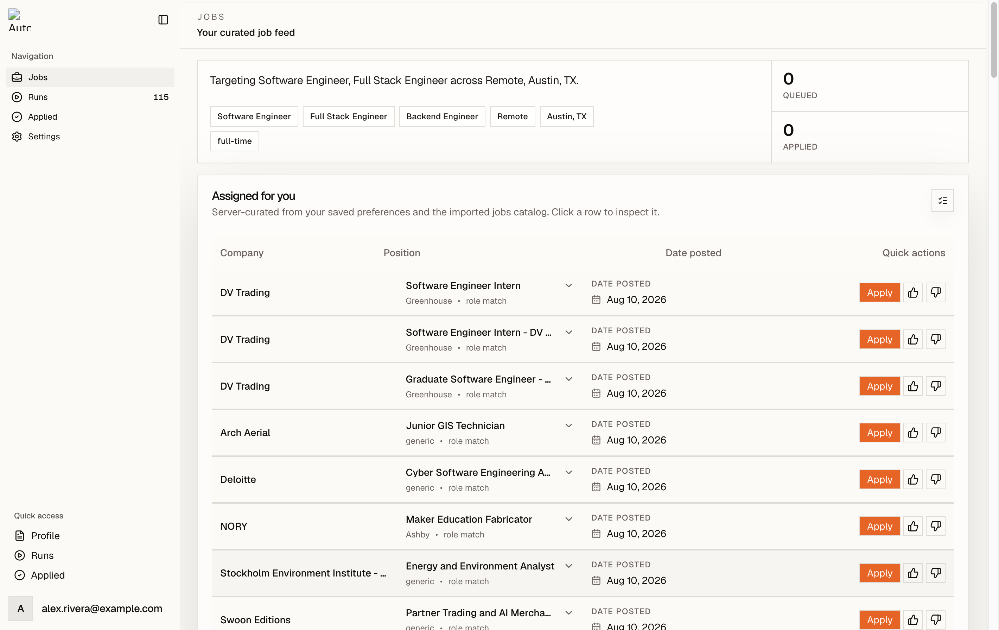
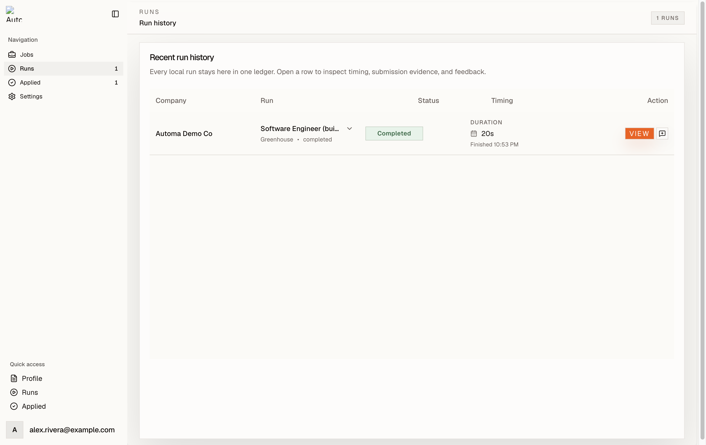

First launch takes one extra step
macOS will say “Automa” cannot be opened because the developer cannot be verified. That is expected. The app is unsigned because an Apple Developer certificate costs $99 a year and this project is free. The entire source is published, so you can read exactly what it does.
- Drag Automa into your Applications folder.
- Right-click (or Control-click) the app, choose Open, then Open again.
- That is once. It opens normally from then on.
Prefer the terminal? xattr -dr com.apple.quarantine /Applications/Automa.app
Want to verify the download first? Compare
shasum -a 256 ~/Downloads/Automa-mac-arm64.dmg
against SHA256SUMS.txt on the release page.
What it does
Brings the jobs to you
Pulls the public SimplifyJobs internship and new-grad boards — about 33,000 listings — and keeps them in a local database you can search instantly, online or not.
Fills the application
Drives a real browser inside the app window. You watch every field being filled. Purpose-built support for Greenhouse, Lever, Ashby, Workday and Work at a Startup.
Never guesses about you
Questions about citizenship, sponsorship, disability, veteran status, race or gender are never answered by a model. Automa uses what you entered, or it stops and asks.
Nothing leaves your Mac
No account, no sign-in, no server, no telemetry. Your resume and answers are stored in a single file on your machine and are sent only to the application you chose to apply to.
Try it with a demo profile
One click loads a fictional candidate and a generated resume, and runs against a built-in practice application. Nothing is submitted anywhere.
Tracks what you sent
Every run is recorded with the fields it filled and the evidence that it did or did not submit. Finished applications land on a tracker board.
How honest is the automation?
About 59% of currently active listings are on an applicant tracking system Automa has a purpose-built adapter for. The rest are company career sites, where a generic adapter fills what it can and often needs you to finish. The app labels this on every job rather than implying one click is always enough.
Automa also refuses to claim success it cannot prove. A submission is only reported as confirmed when there is real evidence — a confirmation page, a success URL, or the form demonstrably gone. Otherwise it says “pending confirmation” and leaves the judgement to you.
A look at it


Your data
Automa has no backend. There is no account to create and nothing to log in
to. Your profile, resume and answers live in
~/Library/Application Support/Automa and are readable only by
you. Job listings come from a
public JSON file on GitHub,
fetched no more than once an hour. There is no analytics of any kind, on
this page or in the app.
Requirements
- macOS on Apple Silicon or Intel
- About 400 MB of disk space
- An internet connection to refresh the job list. Everything else works offline.
- Optionally, your own OpenAI or Anthropic API key for free-text answers. Automa works without one, using deterministic rules.